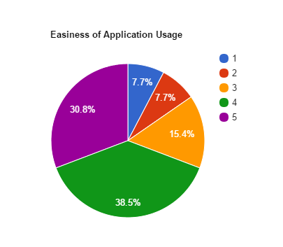
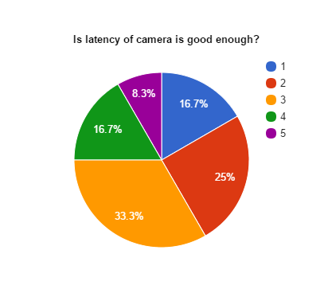

Remotely Controlled Explorer Robot
Graduation Project
Sezgin ACER
Advisor: Asst. Prof. Dr. Ömer Sinan SARAÇ
Table of Contents
- Problem and Solution
- Design and Implementation
- Encountered Problems
- Experiments and Results
- Further Research
- Demonstration
Places difficult to move
Suppose that there is a problem somewhere and it's not possible to move in any direction.
What can you do in such case??
Watch office, home or somewhere else
People usually want all the things to be under their control and safe in places they live and work.
Military Purpose
There can be a place far away to watch for military purpose.
Solution
You guessed it right!
A robot
A robot
- with a Camera
- connected to Internet
- controlled by a SmartPhone
Raspberry Pi
- computer in the size of Credit Card
- has Quad-Core ARM CPU and 1GB RAM
- has GPIO pins for digital I/O
- has Camera port
- can run some GNU/Linux distributions
- can easily connected to Internet via ethernet or Wi-Fi
Robot Body
- should move easily
- should be cheap
- should consume less energy
Power Supply
- should have high capacity
- should be light and move easily
- should have two output
Pubnub Real-Time Communication Service
- provides real-time communication among devices
- supports many programming languages
- uses Publish - Subscribe model for communication
- has free plan for developers
Android Application
- 82% of smartphones running Android (IDC's research)
- Development is easy and free
- Open source operating system
4-Wheel or 2-Wheel
- 4-Wheel design consumes more power
- 4-Wheel design has difficulties while moving
- 2-Wheel design has better maneuverability capability
- 2-Wheel design consumes less power
For these reasons, we decided to use 2-wheels and one ball caster in the front.
Camera Latency
- There is latency between real frame and one in the phone
- Latency even in local network
- Resolution and FPS affect latency
- Caused by CPU's processing video streaming
- Development kit can be changed to BeagleBone
Is it easy to use the robot and the application?

Is the latency of camera good enough?

Virtual Reality (VR)
- One of IT trends of today and near future
- Can be combined with this project
- Robot user can feel him/her as if sitting on top of robot
- Robot can be controlled by head motions
THE END
Thanks for your listening..